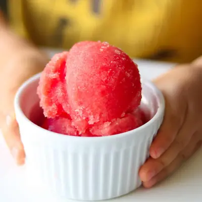

Watermelon Sorbet

Ingredients
- 4 cups frozen diced watermelon
- 2 tablespoons lime juice
- (optional) maple syrup or honey
Steps
- Place the watermelon and lime juice into the bowl of your food processor. Blend everything together until smooth and creamy. You will need to stop and scrape down the sides of the bowl occasionally to ensure everything is well combined. Don't blend too long though. Otherwise the sorbet will get too soft.
- Once you have a smooth creamy texture, taste it and adjust the sweetness if needed by adding more honey. Enjoy immediately or freeze for 3-4 hours, or until ready to serve.
Recipe by Min Kwon · Kidfriendly Meals, from MJ and Hungryman. Saved here for personal use; the original has the full notes, tips and photos. Open original